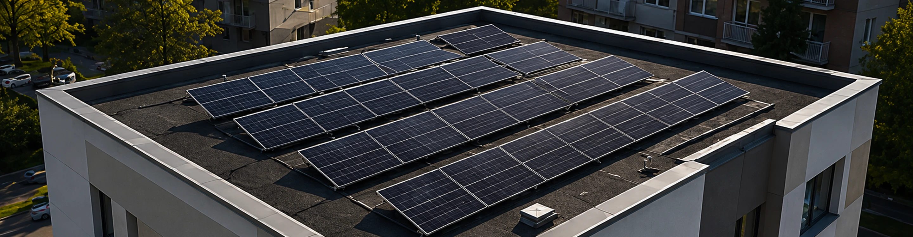

Bezúročný úvěr NZÚ – vzorec výpočtu, podmínky způsobilosti, legislativní rámec a hranice 100 kW pro FVE v bytovém domě.
Hlavní forma podpory administrovaná Státním fondem životního prostředí (SFŽP). Pokrývá náklady na fotovoltaické panely, střídač, bateriové úložiště i projektovou dokumentaci formou bezúročného úvěru, ne dotace.

Sdílení elektřiny v SVJ
Od roku 2024 mohou SVJ na základě novely energetického zákona (Lex OZE II) legálně sdílet elektřinu z FVE mezi bytovými jednotkami v rámci jedné budovy, aniž by k tomu bylo nutné zakládat samostatnou právnickou osobu.
Stavební povolení a hranice 100 kW
FVE do 100 kW na stávající budově nevyžaduje povolení stavebního úřadu (povolení záměru). Od 100 do 250 kW jde o jednoduchou stavbu vyžadující povolení záměru, avšak bez nutnosti kolaudačního rozhodnutí.
Připojení k distribuční soustavě
SVJ musí uzavřít smlouvu o připojení s místním distributorem (ČEZ Distribuce, EG.D nebo PREdistribuce). Distributor má ze zákona lhůtu 30 dní na vyjádření k žádosti u zařízení připojovaného do nízkého napětí, u vyšší napěťové hladiny (větší instalace) 60 dní.
Certifikace zařízení
Střídače musí splňovat normu ČSN EN 50549 pro připojení k distribuční soustavě. FV panely podléhají normám IEC 61215 a IEC 61730.
Kvalita provedení ovlivňuje bezpečnost systému, jeho životnost i jednoduchost servisního zásahu. Profesionální rozvaděč a kabeláž se od základního provedení liší zejména v přehlednosti, použitých komponentech a odolnosti vůči vlhkosti.
Profesionální provedení
Základní provedení
Pro FVE do výkonu 100 kW na stávající budově není potřeba ani stavební povolení, ani ohlášení záměru. Nad 100 kW je nutné stavební povolení – do 250 kW ve zjednodušeném řízení, nad touto hranicí v plném rozsahu. Většina bytových domů s 12–30 byty se s běžně navrhovaným výkonem FVE do tohoto limitu pohodlně vejde.
Podmínky NZÚ stanovují maximálně 3 kWp na jednu bytovou jednotku. Dům s 20 byty tedy může získat bezúročný úvěr na FVE o výkonu nejvýše 60 kWp. Zároveň platí dolní hranice 5 kWp – menší instalace nejsou způsobilé. Výše úvěru odpovídá vzorci: 350 000 Kč za prvních 5 kWp + 40 000 Kč za každý další kWp + 15 000 Kč za každou kWh bateriového úložiště (u 60 kWp to je 2 550 000 Kč bez baterie). Celkový úvěr na dílčí renovaci nesmí překročit 250 000 Kč na byt, u samotné FVE ale obvykle rozhoduje limit 3 kWp na byt.
Nenašli jste odpověď na svou otázku na této stránce?
Zkuste vyhledat dané téma na webu.